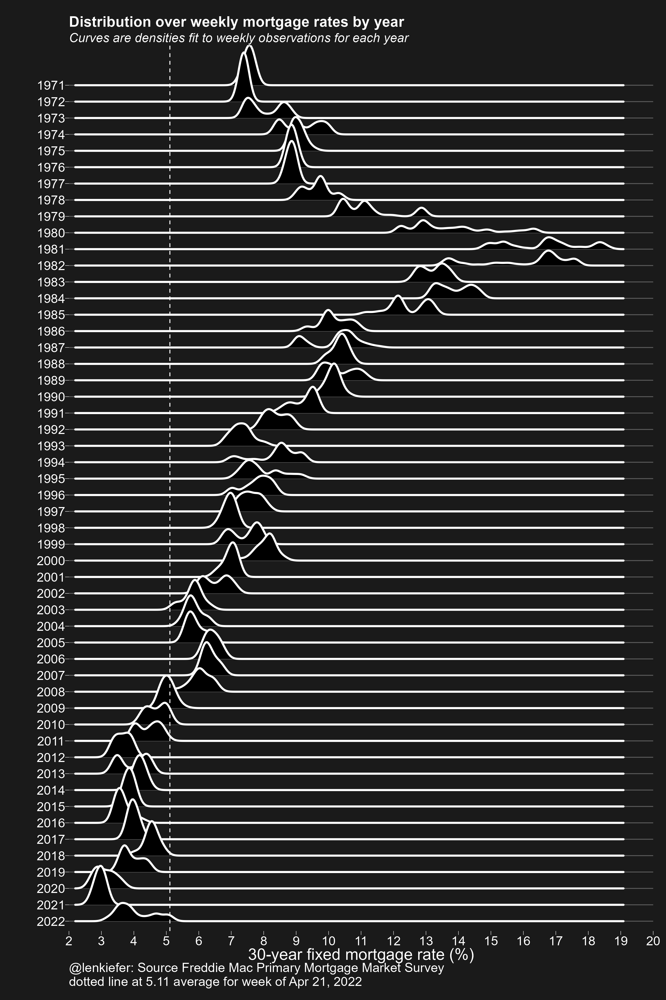

Earlier today I tweeted out an update of our skyline mortgage rate chart. Gray Kimbrough (follow him on Twitter to get all your Millennial Myths busted) pointed out that my chart style was close to famous art style of Joy Division’s 1979 album Unknown Pleasures.
That was exactly right, because I arrived at the skyline mortgage rate chart by tweaking my original application of ‘ggridges::geom_density_ridges’ (formerly known as Joyplot) code to arrive there. In fact, a plot in style of the Unknown Pleasures cover art is almost available out of the box with the R package ggridges. You just have to apply some style to the plot theme as I do below.
Well let’s go back in time to make a stylish plot. Here’s all the R code you need to generate it. I used my darklyplot package’s function ‘theme_dark2’ for the extra dark styling. Otherwise standard stuff.

R code for plot
################################################################
# load packages
################################################################
library(ggridges) # for plot
library(darklyplot) # for theme_dark2() function
library(tidyverse) # data wrangling
library(lubridate) # date functions
library(tidyquant) # to get data
################################################################
# get data (use tidyquant package to get data from FRED)
################################################################
df <- tq_get("MORTGAGE30US",
get="economic.data",
from="1971-01-01") %>%
# reorganize year as a factor so the plot goes down
mutate(yearf=fct_reorder(factor(year(date)), -year(date)))
################################################################
# make plot
################################################################
ggplot(data=df,
aes(y=yearf,
x=price))+
geom_density_ridges(color="white",fill="black",size=1.1,scale=3)+
darklyplot::theme_dark2(base_family="Arial",base_size=18)+
theme(panel.grid.minor=element_blank(),
plot.title=element_text(size=rel(1.5),face="bold"),
plot.subtitle=element_text(size=rel(1.3),face="italic"),
panel.grid.major.x=element_blank())+
scale_x_continuous(breaks=seq(0,20,1),expand=c(0,0),limits=c(2.5,19))+
geom_vline(data= . %>% tail(1), linetype=2,color="white", aes(xintercept=price))+
labs(x="30-year fixed mortgage rate (%)",
y="",
title="Distribution over weekly mortgage rates by year",
subtitle="Curves are densities fit to weekly observations for each year",
caption=paste0("@lenkiefer: Source Freddie Mac Primary Mortgage Market Survey\n",
"dotted line at ",tail(df$price,1), " average for week of ", format(last(df$date),'%b %d, %Y')))